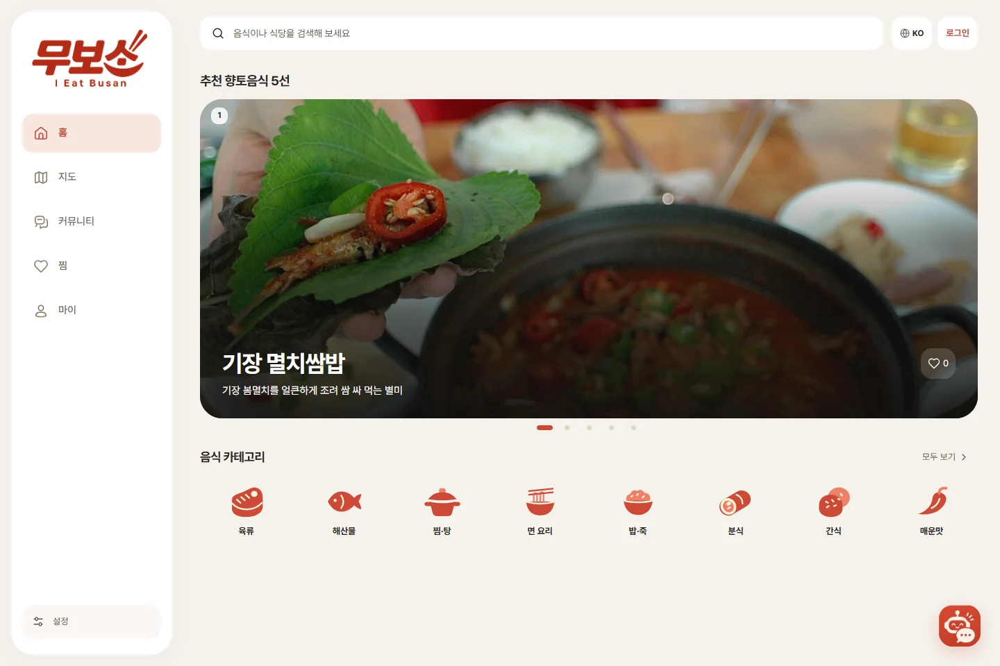
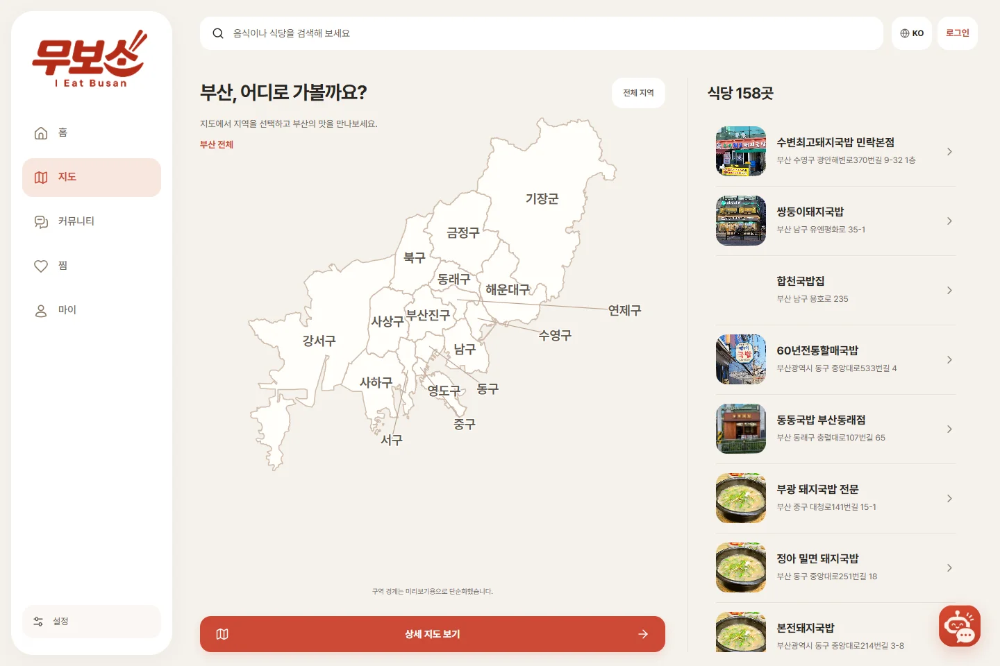
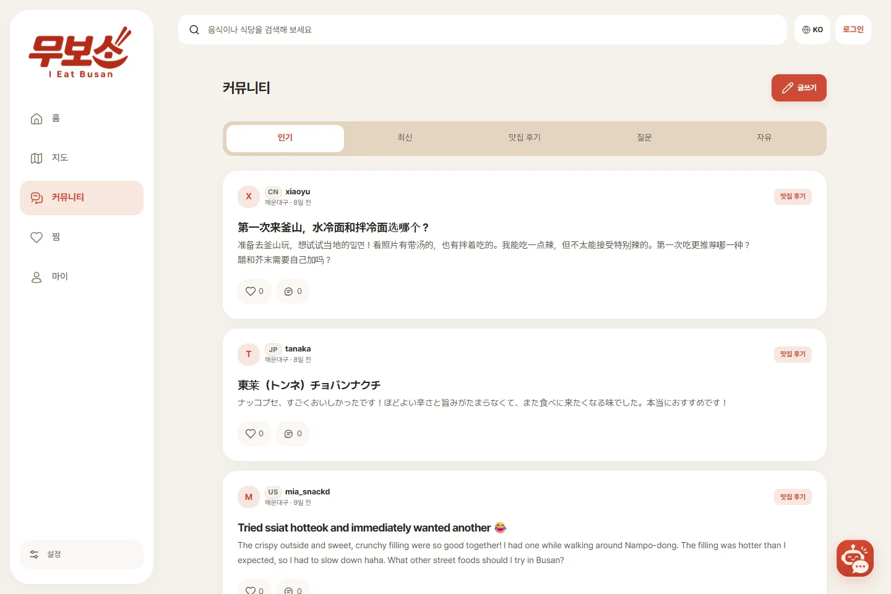
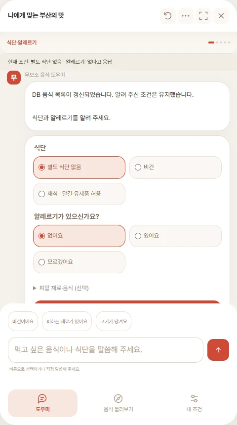

PROJECT_01 / TEAM FINAL PROJECT / 2026
무보소I EAT BUSAN
부산의 맛을, 더 가까이.
외국인 여행자가 먹을 음식을 고르고, 음식 정보를 살펴보고, 가볼 식당을 찾도록 돕는 부산 음식 탐색 웹앱입니다.

01 / THE CHALLENGE
‘맛집’보다 먼저, 내가 먹을 음식을 이해하는 일.
현지 음식을 모르는 여행자에게는 식당의 이름이나 순위만으로 선택하기 어렵습니다. 어떤 재료를 쓰는지, 얼마나 매운지, 식단과 알레르기 조건을 어떻게 확인할지부터 알려 주어야 합니다.
홈의 추천 음식, 8개 카테고리와 음식명·재료 검색으로 탐색을 시작합니다. 음식 상세에서 재료·먹는 방법·알레르기 정보를 읽고, 식당과 지도를 확인한 뒤 음식이나 식당을 찜할 수 있습니다.
- 발견추천 음식 · 카테고리
- 이해재료 · 맵기 · 음식 설명
- 방문지역 선택 · 식당 · 지도
02 / MY CONTRIBUTION
여러 화면을 하나의 경험으로.
팀장으로 팀원들이 즐겁게 협업할 수 있도록 격려하며, UX/UI 디자인을 맡아 서비스 전반의 시각적 일관성과 사용 흐름을 다듬었습니다.
- 공통 디자인 언어코랄 중심색과 따뜻한 미색, 라운드 요소의 곡률·간격·타이포그래피를 정리했습니다.
- 화면과 인터랙션 개선홈의 정보 밀도, 지도와 식당 목록의 구조, 커뮤니티 글쓰기 동선, 챗봇의 제목·도구 배치를 개선했습니다.
- 다국어·반응형 검수언어에 따라 길어지는 문구, 모바일 버튼 겹침, 강조 배경과 아이콘 정렬을 확인하고 보완했습니다.
- 디자인과 구현 연결Figma 화면과 실제 웹앱의 컴포넌트를 맞추고, 배포 화면을 확인하며 수정 사항을 반영했습니다.
03 / FIND A PLACE
지역과 식당 사이의 거리를 줄이다.
부산의 구·군을 선택하면 해당 지역의 식당 목록으로 이어집니다. 지도 외곽과 식당마다 겹치던 박스를 줄이고, 사진·식당명·주소가 이어지는 목록으로 정리했습니다. 선택한 구역의 전체 경계와 식당 행의 강조 범위도 일관되게 맞췄습니다.

04 / COMMUNITY
여행자의 한 끼가 다음 사람의 정보로.
커뮤니티에서는 음식 후기를 나누고, 현지 음식을 먹는 방법을 묻고 답합니다. 인기·최신 순서와 후기·질문·자유 분류로 글을 살펴보고, 로그인 후 글쓰기와 댓글로 참여할 수 있습니다.
글쓰기를 상단의 주요 행동으로 옮기고 떠 있는 중복 버튼을 제거했습니다. 작은 화면에서도 작성 버튼과 분류 선택이 겹치지 않도록 간격과 배치를 정리했습니다. 게시글은 작성자의 언어로 표시됩니다.

05 / FOOD GUIDE
식단과 취향을 묻는
음식 도우미.
챗봇 형태의 도우미는 식단·알레르기·재료·맵기 조건을 바탕으로 등록된 음식의 후보를 안내합니다. 한국어·영어·일본어·중국어의 질문, 버튼과 음식 설명이 연결되도록 검수했습니다.
등록된 음식 데이터와 규칙을 바탕으로 조건에 맞는 후보를 좁힙니다. 음식 선택에 필요한 정보를 제공하고, 실제 재료와 조리 환경은 식당에서 확인하도록 안내합니다.
TEAM IMPLEMENTATION
HTML · CSS · JavaScript / Figma / Supabase / Google Maps / Vercel

06 / TEAM
함께 만든 사람들
- 김준철
- 팀장 · UX/UI 디자인
- 문소정
- PM
- 박현민
- 개발 총괄
- 이정규
- DB 개발 · 영상 제작
- 김채운
- 마케팅 · 영상 제작